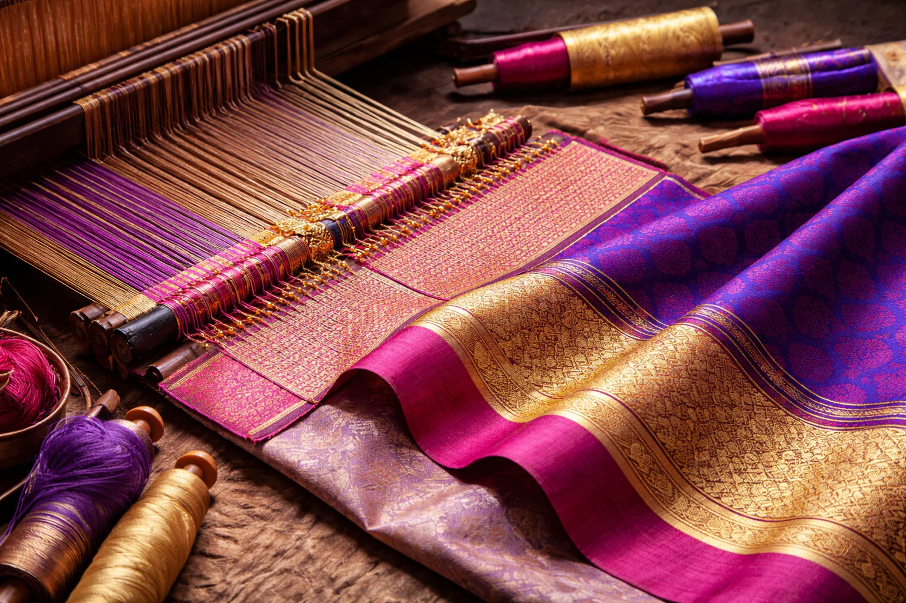

Banarasi the way it was always meant to be. We use only natural fibers and real metal alloys, ensuring that what you own is not just a garment, but a heritage asset.

Katan Silk
The purest warp & weft
Every thread is sourced from hand-picked cocoons, twisted by hand to create 'Katan'—a silk so resilient it survives for centuries without losing its luster.
We don’t do mass-produced plastic zari. Our metallic threads are tested for purity, giving the saree a weight and drape that 'fast fashion' can never replicate.
Because it is hand-loomed, no two inches are identical. The slight variations are the maker's signature—proof that it carries a story you don't need to announce.